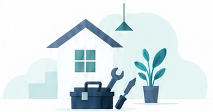

출장·진단비
방문과 점검에 드는 비용
수리하지 않을 때도 발생하는지 확인하세요.
수리 비용과 이용 순서를 미리 확인하세요.

작은 수리가
더 좋은 일상을 만듭니다.
우리 동네
집수리 파트너
YESSURI
방문과 점검에 드는 비용
수리하지 않을 때도 발생하는지 확인하세요.
수리 작업에 드는 비용
작업 범위와 난이도에 따라 달라집니다.
교체 부품과 자재에 드는 비용
작업비에 포함되는지, 별도인지 확인하세요.
| 작업 | 예상 금액 | 작업 기준 |
|---|---|---|
| 출장·진단 | 2만~5만원 | 방문 1회 · 수리 여부와 별도 |
| 수도꼭지 교체 | 5만~10만원 | 수전 1개 · 작업비 기준 · 제품비 별도 |
| 싱크대 배수구 막힘 | 5만~15만원 | 1곳 · 단순 막힘 작업 기준 |
| 스위치 교체 | 3만~8만원 | 스위치 1개 · 작업비 기준 · 부품비 별도 |
표시 금액은 시안용 예상 범위이며 실제 견적은 현장 확인 후 안내됩니다. 출장비·부품비·추가 작업비·부가세 포함 여부는 상담 시 확인하세요.
필요한 수리 분야를 선택하세요.
전문 분야와 출장 가능 지역을 살펴보세요.
문제 증상과 방문 가능 여부를 문의하세요.
작업 범위와 비용, 일정을 확인하세요.
추가 작업은 내용과 금액을 확인한 뒤 결정하세요.
아래 내용을 복사해 업체에 보내세요.
부산 ○○구에서 ○○ 수리가 필요합니다. 증상은 ○○이고 사진을 보내드릴 수 있습니다. 방문 가능한 일정과 출장·진단비를 알려주세요. 작업비와 부품비, 부가세 포함 여부도 안내 부탁드립니다.
업체에 따라 발생할 수 있습니다. 방문 요청 전에 금액과 발생 조건을 확인하세요.
표시 금액은 기본 작업 조건에 따른 예상 범위입니다. 현장 상태와 부품, 추가 작업 여부에 따라 최종 견적이 달라질 수 있습니다.
업체와 작업에 따라 다릅니다. 사용할 부품과 제품의 비용이 포함되어 있는지 상담할 때 확인하세요.
추가 작업의 내용과 금액을 안내받고 진행 여부를 결정하세요. 변경된 총금액은 문자나 견적서로 받아두면 좋습니다.
예약한 업체에 직접 연락하세요. 일정 변경 가능 여부와 취소 비용은 업체에 확인해 주세요.
작업한 업체에 직접 결제합니다. 결제 수단과 시점은 상담할 때 협의하세요.
작업한 업체에 연락하여 작업 일자와 증상을 알려주세요. 사후 점검과 재방문 조건은 업체별로 다릅니다.
부산 지역의 수리 업체를 찾아 직접 상담할 수 있도록 연결하는 서비스입니다. 수리 견적과 일정, 작업 및 결제 조건은 고객과 업체가 협의합니다.